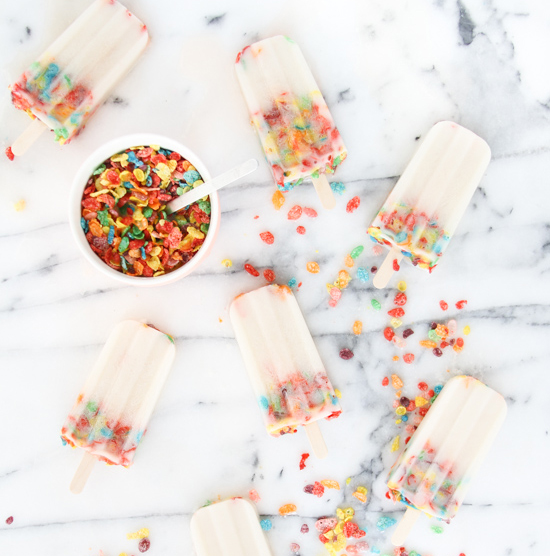

Cereal Popsicles
Amazing dessert with a little ice cream involved. Ideal for sunny day, or not so sunny days. In fact, ideal for any ocassion.
 Easy |
 8 servings |
 20 minutes |
|---|
Ingredients:
2 cups of your favourite cerea
4 cups of milk
2 scoops of vanilla ice cream